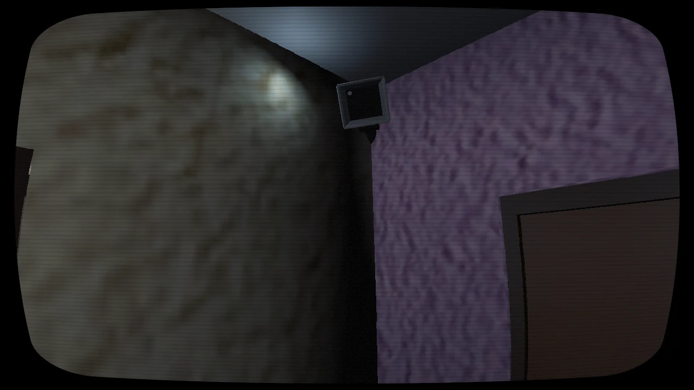
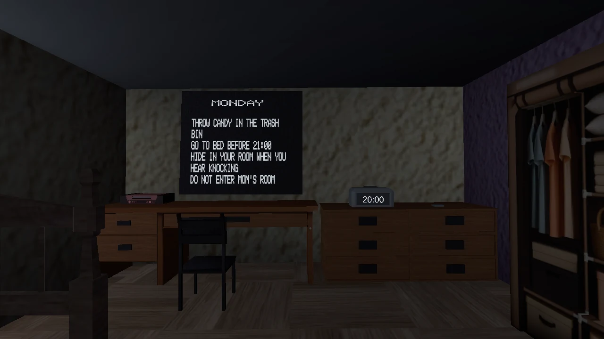

让结局占满视野，又保留追踪
发现的问题
把结局画布加大后仍会露出屋内模型，平面演出无法覆盖头部转动。
做出的调整
结局移入独立黑底场景，移除屋内模型、关闭干扰事件，同时保留头部追踪，解决演出和空间的冲突。

01 / 玩家体验
以日常物件、三真一假的家规和逐日变化的环境，搭建 VR 恐怖探索原型。
02 / 设计重点
丢弃糖果、按时睡觉、敲门时躲藏构成家规；“不要进入妈妈的房间”则没有惩罚。玩家通过反应差异发现异常，而不是等待一句解释。
门、抽屉、纸页与钥匙采用 XR 抓取或射线操作。钥匙需要被投掷并撞上门才解锁；纸页拿起即进入世界空间阅读，让信息也有物件的触感。
睡眠推进日期，规则板、时钟、雾和夜景共同表达时间。逐日变暗的屋外环境与熟悉的室内物件形成反差，把重复生活作为叙事节奏。
URP 中整合基于 Cyanilux 开源方案的 CRT 效果，用低噪点、粗扫描线、鱼眼、柔黑晕与色散建立被观察的感觉，再通过模拟器反复调整可读性。
03 / 项目画面


04 / 真实迭代
发现的问题
把结局画布加大后仍会露出屋内模型，平面演出无法覆盖头部转动。
做出的调整
结局移入独立黑底场景，移除屋内模型、关闭干扰事件，同时保留头部追踪，解决演出和空间的冲突。
发现的问题
早期噪点过高、扫描线太细，硬黑角也让画面显得突兀。
做出的调整
降低噪点、加粗扫描线，再用柔黑晕和 Bloom／色散收尾。最终模拟器视觉获得认可，头显体验仍另行验证。
05 / 当前版本
当前为开发原型，图片来自 XR 模拟器。敲门事件目前停用，节奏仍在调试。头显双眼、追踪、舒适度及完整七天流程仍需验证；尚不提供公开下载。